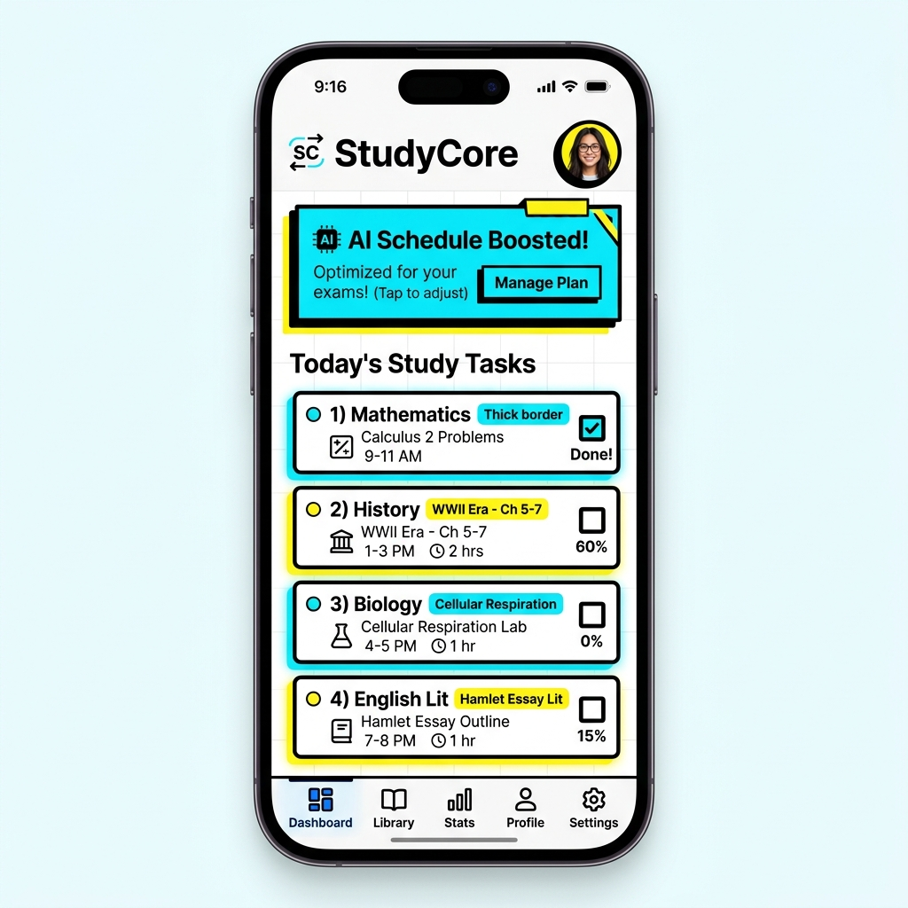
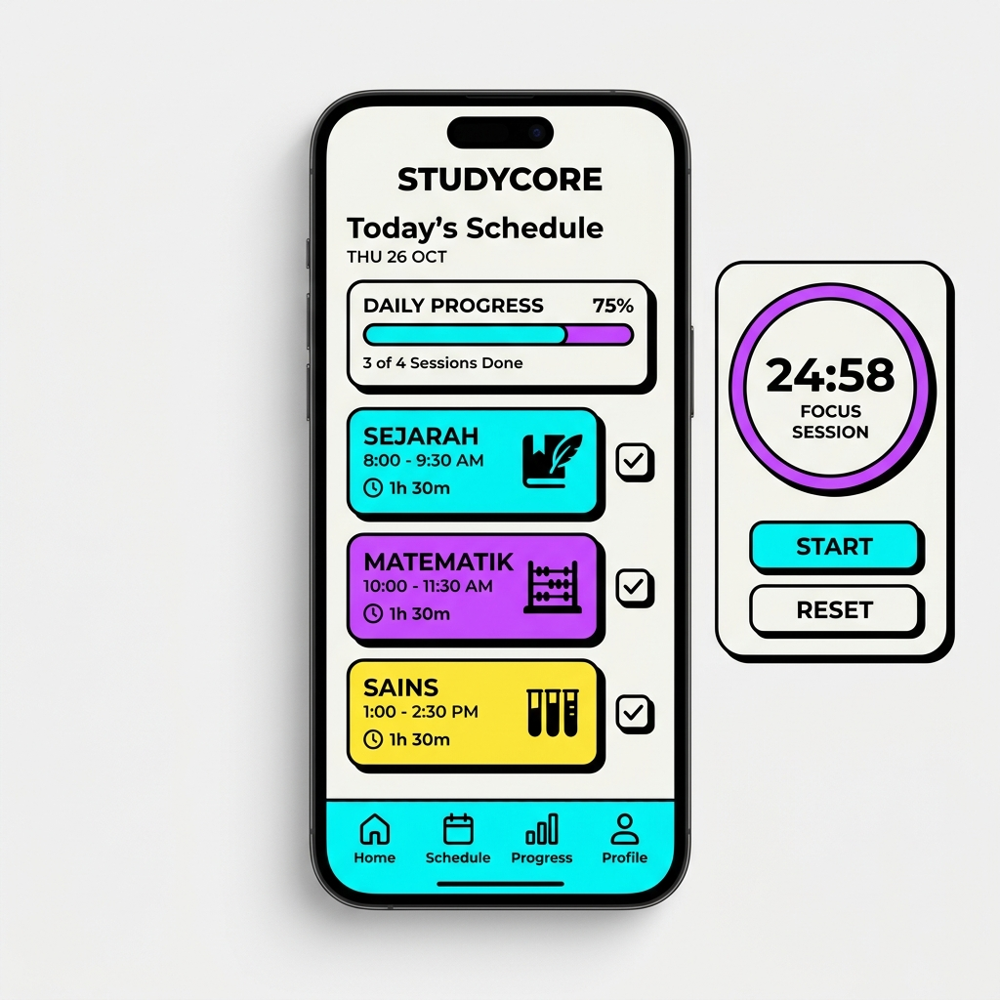
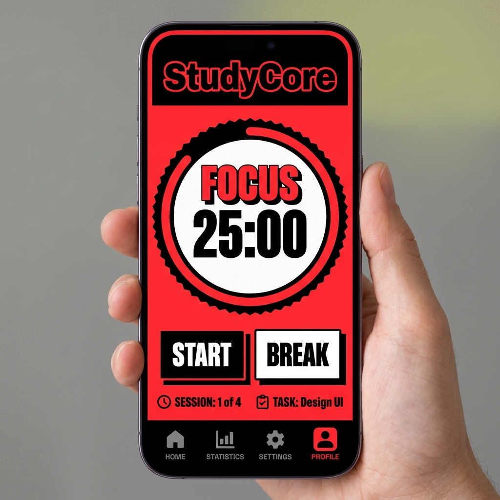
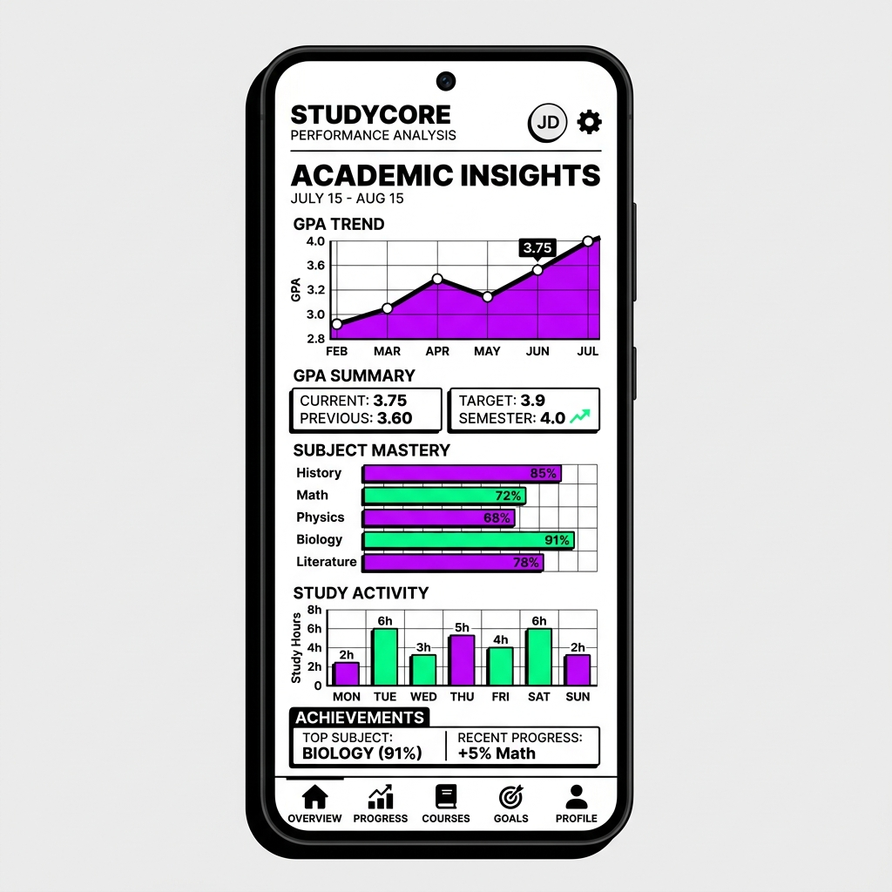

Platform pengurusan masa pintar yang mengintegrasikan Algoritma Penjadualan AI dan Teknik Pomodoro untuk kecemerlangan akademik murid.

Kebanyakan murid menghadapi masalah menguruskan masa bukan kerana mereka malas, tetapi kerana mereka tidak tahu subjek mana yang perlu diberi keutamaan. StudyCore hadir sebagai penyelesaian yang membuang segala kerumitan (friction) dalam belajar.

Satu aplikasi, pelbagai solusi untuk fokus anda.
01. Dashboard

02. Pomodoro

03. Analisis
Direka khas untuk mobiliti dan kecekapan tinggi.
Murid boleh menetapkan bilangan jam belajar yang berbeza bagi setiap hari (Isnin-Ahad). Memberi fleksibiliti mengikut jadual sekolah dan aktiviti kokurikulum.
Algoritma unik yang menyusun subjek berdasarkan "Gap Analysis". Subjek yang mempunyai jurang markah terbesar akan dijadualkan lebih kerap secara automatik.
Setiap subjek dilengkapi dengan timer 25:5. Murid tidak perlu aplikasi luar. Notifikasi dan bunyi akan memberitahu bila masa untuk fokus dan rehat.
Pantau perkembangan subjek melalui visualisasi "Progress Bar" dan sejarah markah. Membolehkan murid melihat sejauh mana mereka telah berkembang.
Antaramuka Neo-Brutalism yang bertenaga dan "high-contrast" menarik minat golongan remaja untuk terus menggunakan aplikasi setiap hari.
Data anda disimpan selamat di dalam awan (Cloud). Boleh diakses pada bila-bila masa melalui telefon pintar atau komputer tanpa perlu pemasangan.
Menambah sistem "XP" dan "Lencana" untuk meningkatkan motivasi murid belajar.
Menggunakan API OpenAI untuk memberikan ringkasan subjek secara automatik.
Membenarkan ibu bapa memantau perkembangan anak-anak secara masa-nyata.